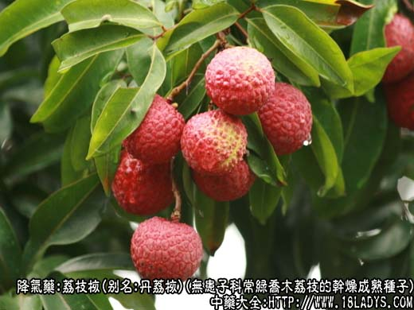
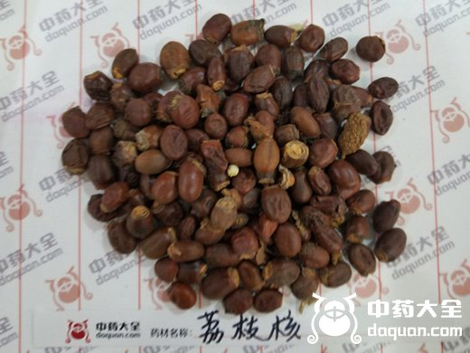
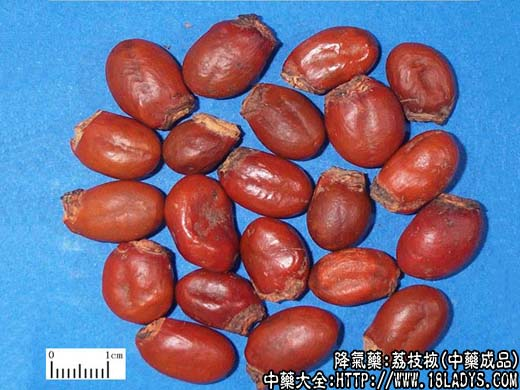

、
、

荔枝核为少常用中药。始载《开宝本草》。
别名：荔支核、丹荔核、丽枝核。
来源：为无患子科植物常绿乔木荔枝的干燥成熟种子。均为栽培。
产地：主产于广东、广西、福建、四川、台湾等地。
性状鉴别：种子呈长圆形略扁，长2～2.5厘米，宽1～1.7厘米。表面棕红色或紫棕色，光滑有光泽微有皱缩。一端有较大的圆形种脐，淡棕色，无光泽，直径0.7～1厘米。破开后可见肥厚子叶二片，淡黄棕色。坚坚硬，与种皮紧密结合。气微，味涩。以身干饱满者为佳。
主要成分：含皂甙、鞣质a-甘氨酸。
功效与作用：行气、散寒、止痛。
炮制：打碎，生用。
性味：甘、涩、温。
归经：入肝、肾经。
功能：温散寒邪，理气止痛。
主治：疝气肿胀作痛。妇女气滞血瘀，腹痛等症。
临床应用：主要用于治疗男子疝痛，常与橘核同用（参考橘枋项下），或再加小茴香，方如荔橘香散。如睾丸肿痛明显者，则再加配青皮、陈皮。
用量：9～15g。
处方举例：荔橘香散：荔枝核9g，橘核9g，小茴香4.5g,水煎服。
附：荔枝肉，味甘，性平。含蔗糖、葡萄糖、蛋白质、维生素C等。功能散滞气、除腹胀、养血。病后体弱，或慢性病者、肝血虚者可用。一般用干品，每用9～15g，不宜多服，否则易致烦热。